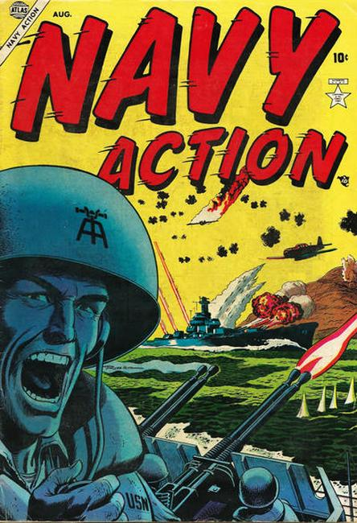

Series: 18 issues 1954-1956
Publisher: Atlas, Marvel
Navy, war anthology. Cover art by Russ Heath.
- "First Blood," art by Mort Lawrence; The USS South Dakota helps win the Battle of Santa Cruz, demonstrating how all ships are part of a team.
- "On December 10, 1950, a U.S. Navy amphibious fleet of 193 vessels...", art by Mac L. Pakula. Burke and Salty battle Hungnam Hannah, who commands a big cannon which moves positions thanks to its built-in skis. They find it and destroy it themselves.
- "Rescue Patrol" text story.
- "The Checkerboard Squadron!", art by Bill Benulis. The Checkerboard Squadron led by Captain Mercer take out roads into North Korea, cutting off supply lines so the Marines can defuse the Chinese offensive.
- "The Stalker!", art by Bob Powell. The submarine Batfish hunts down and destroys a Japanese destroyer which fires its torpedoes too soon, missing the Batfish.